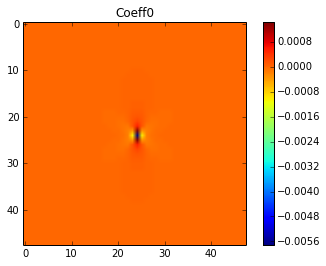
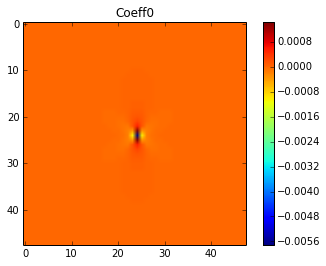

def _getProp(X, E1, E2, nu1, nu2):
X_prop = np.zeros(X.shape + (2,))
X_prop[...,0] = np.where(X == 1, E1, E2)
X_prop[...,1] = np.where(X == 1, nu1, nu2)
return X_prop
def getPlot(X,title='title'):
plt.figure()
plt.imshow(X)
plt.title(title)
plt.colorbar()
def getPlots(y, yMKS, model):
getPlot(y[0,...,0],'FE')
getPlot(np.abs(y[0,...,0]-yMKS[0]) * 100,'MKS Absolute % Error')
getPlot(model.coeff.copy()[...,0],'Coeff0')
#getPlot(model.coeff[...,1],'Coeff1')
def getDel(L):
C = (L-1)/2
Del = np.zeros((2, L, L))
Del[0, C, C] = 1
Del[1] = np.abs(Del[0]-1)
return Del
def getProp(X):
E1 = 80
E2 = 120
nu1 = 0.3
nu2 = 0.3
return _getProp(X, E1, E2, nu1, nu2)
def getRand(L):
return np.random.randint(2, size=(1, L, L))
def getCoeffplots(model):
getPlot(model.coeff[...,0],'Coeff0')
#getPlot(model.coeff[...,1],'Coeff1')
---------------------------------------------------------------------------
ValueError Traceback (most recent call last)
<ipython-input-6-95a4b71b4a01> in <module>()
4
5 X = getRand(L)
----> 6 y = FEmodel.predict(getProp(X))
/home/wd15/git/pymks/pymks/elasticFEModel.py in predict(self, X)
101 X_ = self.convert_properties(X)
102
--> 103 y_strain = np.array([self.solve(x) for x in X_])
104
105 return y_strain
/home/wd15/git/pymks/pymks/elasticFEModel.py in solve(self, property_array)
303 pb.time_update(ebcs=ebcs,
304 epbcs=epbcs,
--> 305 functions=functions)
306
307 pb.solve()
/home/wd15/anaconda/lib/python2.7/site-packages/sfepy/discrete/problem.pyc in time_update(self, ts, ebcs, epbcs, lcbcs, functions, create_matrix)
590 self.set_bcs(ebcs, epbcs, lcbcs)
591 self.update_equations(ts, self.ebcs, self.epbcs, self.lcbcs,
--> 592 functions, create_matrix)
593
594 def setup_ic(self, conf_ics=None, functions=None):
/home/wd15/anaconda/lib/python2.7/site-packages/sfepy/discrete/problem.pyc in update_equations(self, ts, ebcs, epbcs, lcbcs, functions, create_matrix)
551 graph_changed = self.equations.time_update(self.ts,
552 ebcs, epbcs, lcbcs,
--> 553 functions, self)
554 self.graph_changed = graph_changed
555
/home/wd15/anaconda/lib/python2.7/site-packages/sfepy/discrete/equations.pyc in time_update(self, ts, ebcs, epbcs, lcbcs, functions, problem, verbose)
277
278 active_bcs = self.variables.equation_mapping(ebcs, epbcs, ts, functions,
--> 279 problem=problem)
280 graph_changed = active_bcs != self.active_bcs
281 self.active_bcs = active_bcs
/home/wd15/anaconda/lib/python2.7/site-packages/sfepy/discrete/variables.pyc in equation_mapping(self, ebcs, epbcs, ts, functions, problem)
353 var_di = self.di.get_info(var_name)
354 active = var.equation_mapping(bcs, var_di, ts, functions,
--> 355 problem=problem)
356 active_bcs.update(active)
357
/home/wd15/anaconda/lib/python2.7/site-packages/sfepy/discrete/variables.pyc in equation_mapping(self, bcs, var_di, ts, functions, problem, warn)
1421 self.eq_map = EquationMap('eq_map', self.dofs, var_di)
1422 if bcs is not None:
-> 1423 bcs.canonize_dof_names(self.dofs)
1424 bcs.sort()
1425
/home/wd15/anaconda/lib/python2.7/site-packages/sfepy/discrete/conditions.pyc in canonize_dof_names(self, dofs)
88 """
89 for cond in self:
---> 90 cond.canonize_dof_names(dofs)
91
92 def sort(self):
/home/wd15/anaconda/lib/python2.7/site-packages/sfepy/discrete/conditions.pyc in canonize_dof_names(self, dofs)
222 """
223 self.dofs[0] = _canonize(self.dofs[0], dofs)
--> 224 self.dofs[1] = _canonize(self.dofs[1], dofs)
225
226 class LinearCombinationBC(Condition):
/home/wd15/anaconda/lib/python2.7/site-packages/sfepy/discrete/conditions.pyc in _canonize(dofs, all_dofs)
109 Helper function.
110 """
--> 111 vname, dd = dofs.split('.')
112
113 if dd == 'all':
ValueError: too many values to unpack
sfepy: matrix shape: (1151, 1151)
sfepy: assembling matrix graph...
sfepy: ...done in 0.00 s
sfepy: matrix structural nonzeros: 35087 (2.65e-02% fill)
sfepy: matrix shape: (1151, 1151)
sfepy: assembling matrix graph...
sfepy: ...done in 0.00 s
sfepy: matrix structural nonzeros: 35087 (2.65e-02% fill)
sfepy: matrix shape: (1151, 1151)
sfepy: assembling matrix graph...
sfepy: ...done in 0.00 s
sfepy: matrix structural nonzeros: 35087 (2.65e-02% fill)
sfepy: matrix shape: (18431, 18431)
sfepy: assembling matrix graph...
sfepy: ...done in 0.04 s
sfepy: matrix structural nonzeros: 582863 (1.72e-03% fill)
sfepy: matrix shape: (18431, 18431)
sfepy: assembling matrix graph...
sfepy: ...done in 0.04 s
sfepy: matrix structural nonzeros: 582863 (1.72e-03% fill)
sfepy: matrix shape: (18431, 18431)
sfepy: assembling matrix graph...
sfepy: ...done in 0.04 s
sfepy: matrix structural nonzeros: 582863 (1.72e-03% fill)
sfepy: matrix shape: (647, 647)
sfepy: assembling matrix graph...
sfepy: ...done in 0.00 s
sfepy: matrix structural nonzeros: 19391 (4.63e-02% fill)
sfepy: matrix shape: (647, 647)
sfepy: assembling matrix graph...
sfepy: ...done in 0.00 s
sfepy: matrix structural nonzeros: 19391 (4.63e-02% fill)
9
sfepy: matrix shape: (2591, 2591)
sfepy: assembling matrix graph...
sfepy: ...done in 0.01 s
sfepy: matrix structural nonzeros: 80303 (1.20e-02% fill)
sfepy: matrix shape: (2591, 2591)
sfepy: assembling matrix graph...
sfepy: ...done in 0.01 s
sfepy: matrix structural nonzeros: 80303 (1.20e-02% fill)
18
sfepy: matrix shape: (5831, 5831)
sfepy: assembling matrix graph...
sfepy: ...done in 0.01 s
sfepy: matrix structural nonzeros: 182687 (5.37e-03% fill)
sfepy: matrix shape: (5831, 5831)
sfepy: assembling matrix graph...
sfepy: ...done in 0.01 s
sfepy: matrix structural nonzeros: 182687 (5.37e-03% fill)
27
sfepy: matrix shape: (10367, 10367)
sfepy: assembling matrix graph...
sfepy: ...done in 0.02 s
sfepy: matrix structural nonzeros: 326543 (3.04e-03% fill)
sfepy: matrix shape: (10367, 10367)
sfepy: assembling matrix graph...
sfepy: ...done in 0.02 s
sfepy: matrix structural nonzeros: 326543 (3.04e-03% fill)
36
sfepy: matrix shape: (16199, 16199)
sfepy: assembling matrix graph...
sfepy: ...done in 0.03 s
sfepy: matrix structural nonzeros: 511871 (1.95e-03% fill)
sfepy: matrix shape: (16199, 16199)
sfepy: assembling matrix graph...
sfepy: ...done in 0.04 s
sfepy: matrix structural nonzeros: 511871 (1.95e-03% fill)
45


 
